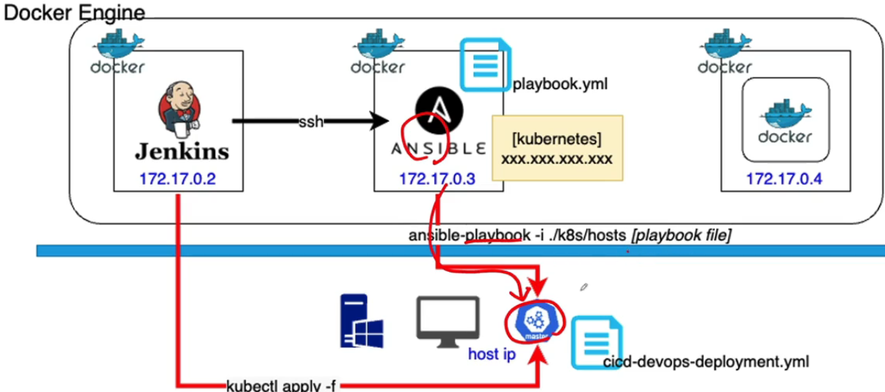
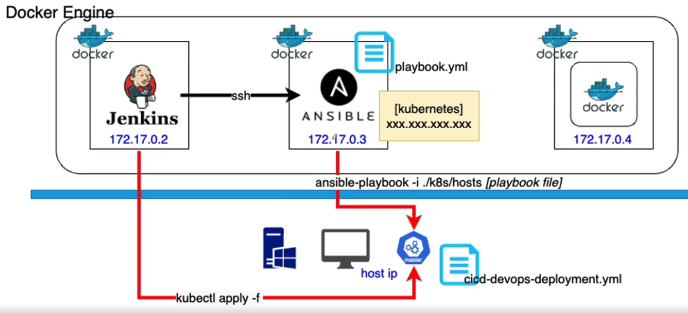
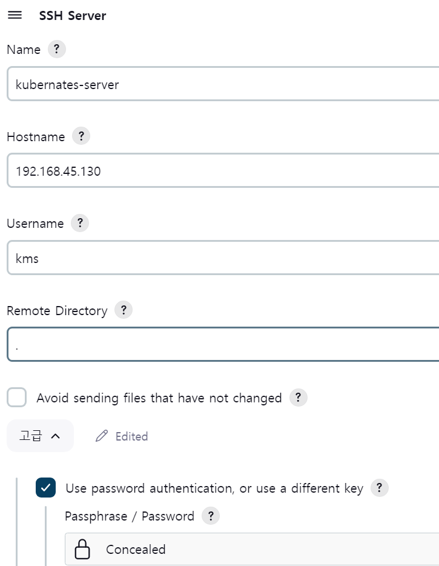
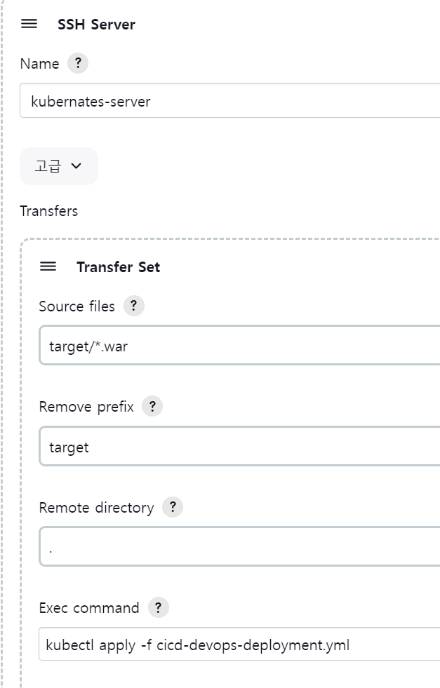
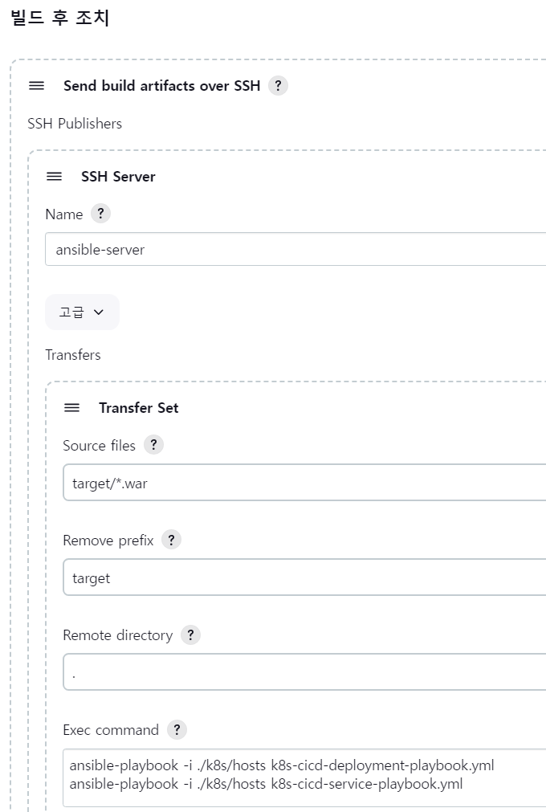

ci-cd-section-04-ch-03-kubernates-ansible
Ansible로 쿠버네티스 자동화하는 것이 목적입니다.

Ansible 서버에서 쿠버네티스 클러스터에 접속해서 저장되어있는 yaml파일 실행하는 실습입니다.
도커 특정 컨테이너만 확인할때 사용하는 명령어
docker > window로 접속할 경우
도커 Ansible에서 준비과정이 필요합니다.
준비과정없이 ssh-copy-id를 실행할 경우 도커 리눅스와 윈도우 환경의 통신 방법이 다르기 때문에 파일이 깨질수 있습니다.
리눅스 서버는 SSH를 통해서 ansible이 통신하는 방면에 window 서버는 winrm 이라는 리모트 매니저를 통해서 통신하기 때문입니다.
그 전에 window 환경은 openSSH를 추가 기능을 설치받고 활성화해야합니다. SSH 활성화 방법
ansible-server에서 pywinrm을 설치합니다.
$ yum install python39 $ pip3 install --upgrade pip $ pip install pywinrmwindow IP 밑에 추가 설정을 작성합니다.
[windows] 192.168.0.93 [windows:vars] ansible_password= 비밀번호(window 이메일 연동시 연동 비밀번호) ansible_connection=winrm ansible_winrm_server_cert_validation=ignore ansible_user= (pwd 입력후 나오는 users 이후 단어) ansible_port=5986Window 서버에서 Powershell 관리자모드에서 실행합니다.
$url = "https://raw.githubusercontent.com/AlbanAndrieu/ansible-windows/master/files/ConfigureRemotingForAnsible.ps1" $file = "$env:temp\ConfigureRemotingForAnsible.ps1" (New-Object -TypeName System.Net.WebClient).DownloadFile($url,$file) powershell.exe -ExecutionPolicy ByPass -File $file
명령어 테스트 및 실행시 주의점
window 환경에서 명령을 실행할 경우에 command가 아니라 win_command 모듈로 명령을 작성합니다.
테스트 핑 실행
플레이북 작성시
윈도우 환경에서는 동작하는 모듈을 다르게 사용하여 사용합니다.
또한 macOS나 window 환경에서 오류가 발생하는 경우 kubectl과 kubernatesYaml파일.yml앞에 절대 경로를 작성합니다.
kubectl도 환경설정이 되어있지 않기 때문에 문제가 발생할 수 있기 때문에 미니큐브 위치를 추가합니다.
도커 ansible-server에 접속하면 접속 계정이 root이지만, 윈도우나 macOS는 접속 계정이름을 root로 사용하지 않습니다.
따라서 접속하려는 계정의 이름을 별도로 지정해야합니다.
Jenkins 활용하기
아이템 등록후 쿠버네티스 제어 확인하기
먼저 Ansible을 통해서 쿠버네티스를 제어하기 전에 Jenkins에서 빌드를한 결과를 쿠버네티스 서버에 복사하고, 쿠버네티스 내부에 있는 .yml파일을 동작시킬 수 있는지 먼저 테스트를 하려고 합니다.

지금까지 과정을 정리해보면
Docker Ansible Server -> Docker kubernates 제어를 확인합니다.
Docker Jenkins -> Docker kubernates 제어를 확인합니다.
쿠버네티스 서버: 환경설정 등록

다른 server와 다르게 Username에 원도우 사용자 이름이 들어갑니다.
빌드후 조치 설정

Ansible로 쿠버네티스 사용하기

젠킨스에서 쿠버네티스 제어 성공하면, Ansible로 쿠버네티스를 제어하는지 확인합니다.
제어가 되어 정상적으로 Deployment와 Service가 동작하는지 확인합니다.